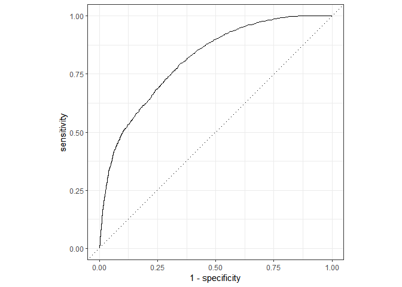

Introduction
Le package yardstick de Rstudio permet d’obtenir facilement l’AUC, l’indice de Youden, le F-score ou encore le coefficient de correlation de Matthews. On va les calculer sur le jeu de donnees qui suit.
# pour la manip de donnees
library("dplyr")
# pour le jeu de donnees
library("otvPlots")
# pour les KPI
library("yardstick")
# pour la courbe ROC
library("ggplot2")
### les donnees
# on prend une des variables comme score predicitf de la cible
# on met en premier la modalite cible "yes", c'est la convention du package yardstick
set.seed(2019)
donnees = bankData %>% mutate(partition = sample(c("train", "test"), size = nrow(.), replace = T,
prob = c(0.7, 0.3)),
cible = factor(y, levels = c("yes","no"))) %>%
rename(score = duration)
dtf_test = donnees %>% filter(partition == "test")
# frequence cible : 0.12
(freq_cible = donnees %>% summarise(freq_cible = mean(cible == "yes")) %>% .$freq_cible)[1] 0.1169848AUC et courbe ROC
# qualite du score : auc 0.81 (!)
# si le dernier contact avec le client a dure longtemps,
# il y a de fortes chances qu'il ouvre un compte a terme
roc_auc_vec(dtf_test$cible, dtf_test$score)
autoplot(roc_curve(dtf_test, cible, score))[1] 0.8112117
Les calculs des seuils optimaux
On procede de facon classique :
- on choisit 100 valeurs de seuils
- pour chaque seuil s on predit “oui” si le score de prevision depasse s, on predit “non” sinon
- on calcule les valeurs des KPI (indices de Youden, F-score, …) pour chaque seuil
- pour chaque KPI on retient le seuil qui le maximise
# on exclut les valeurs min et max des seuils pour eviter le declenchement d'erreurs
# (prevision constante toujours "oui" ou toujours "non")
vect_seuils = seq(min(dtf_test$score), max(dtf_test$score), length.out = 102)[-c(1, 102)]
KPI = vapply(vect_seuils,
function(seuil) {
dtf_test = dtf_test %>%
mutate(prev = factor(c("no","yes")[as.integer(score >= seuil) + 1],
levels = c("yes","no")))
Youden = j_index(dtf_test, cible, prev)$.estimate
Fscore = f_meas(dtf_test, cible, prev)$.estimate
Matthews = mcc(dtf_test, cible, prev)$.estimate
return(c("Youden" = Youden, "Fscore" = Fscore, "Matthews" = Matthews))},
numeric(3))
# seuil qui maximise chaque KPI
index_Youden = which.max(KPI["Youden",])
index_Fscore = which.max(KPI["Fscore",])
index_Matthews = which.max(KPI["Matthews",])
seuil_Youden = vect_seuils[index_Youden]
seuil_Fscore = vect_seuils[index_Fscore]
seuil_Matthews = vect_seuils[index_Matthews]Indice de Youden maximal
On rappelle que l’indice de Youden peut s’interpreter comme le taux de bien classes qui serait calcule sur un echantillon equilibre.
### perf avec le seuil de Youden
dtf_test = dtf_test %>%
mutate(prev = factor(c("no","yes")[as.integer(score >= seuil_Youden) + 1],
levels = c("yes","no")))
# taux erreur sur echantillon equilibre : 28%
1 - bal_accuracy(dtf_test, cible, prev)$.estimate
# specificite : 0.69
spec(dtf_test, cible, prev)$.estimate
# sensibilite : 0.75
sens(dtf_test, cible, prev)$.estimate
# precision : 0.25
# lift 2.16
precision(dtf_test, cible, prev)$.estimate
precision(dtf_test, cible, prev)$.estimate / freq_cible
# matrice de confusion et les autres KPI
# Truth
# Prediction yes no
# yes 1225 3629
# no 407 8095
(conf_Youden = conf_mat(dtf_test, cible, prev))
summary(conf_Youden)[1] 0.2794616
[1] 0.690464
[1] 0.7506127
[1] 0.2523692
[1] 2.157282
Truth
Prediction yes no
yes 1225 3629
no 407 8095
# A tibble: 13 x 3
.metric .estimator .estimate
<chr> <chr> <dbl>
1 accuracy binary 0.698
2 kap binary 0.238
3 sens binary 0.751
4 spec binary 0.690
5 ppv binary 0.252
6 npv binary 0.952
7 mcc binary 0.300
8 j_index binary 0.441
9 bal_accuracy binary 0.721
10 detection_prevalence binary 0.363
11 precision binary 0.252
12 recall binary 0.751
13 f_meas binary 0.378F-score maximal
Quand la cible est rare comme ici, le F-score maximal va correspondre en general a un seuil plus eleve. Autrement dit on va detecter moins de cibles potentielles (sensibilite plus faible) mais elles auront plus de chances de faire partie de la population cible (precision plus elevee, c’est-a-dire lift plus eleve).
# matrice de confusion avec le seuil du Fscore :
# on perd en sensibilite (0.51) mais on gagne en precision (0.40)
# en detectant 2 061 individus a score eleve (versus 4 854 individus avec le seuil de Youden)
dtf_test = dtf_test %>%
mutate(prev = factor(c("no","yes")[as.integer(score >= seuil_Fscore) + 1],
levels = c("yes","no")))
# Truth
# Prediction yes no
# yes 830 1231
# no 802 10493
(conf_Fscore = conf_mat(dtf_test, cible, prev))
summary(conf_Fscore) Truth
Prediction yes no
yes 830 1231
no 802 10493
# A tibble: 13 x 3
.metric .estimator .estimate
<chr> <chr> <dbl>
1 accuracy binary 0.848
2 kap binary 0.363
3 sens binary 0.509
4 spec binary 0.895
5 ppv binary 0.403
6 npv binary 0.929
7 mcc binary 0.366
8 j_index binary 0.404
9 bal_accuracy binary 0.702
10 detection_prevalence binary 0.154
11 precision binary 0.403
12 recall binary 0.509
13 f_meas binary 0.449Coefficient de correlation de Matthews maximal
Le coefficient de Matthews fait jouer des roles plus symetriques aux differents nombres dans la matrice de confusion, sur notre exemple on voit qu’en dehors des vrais negatifs tres nombreux, les trois autres nombres dans la matrice de confusion ont des ordres de grandeur proches.
# matrice de confusion avec le seuil de Matthews :
# sur cet exemple on a encore moins d'individus vises (1 490) et un lift qui frole 4
# et la matrice de confusion est davantage equilibree
dtf_test = dtf_test %>%
mutate(prev = factor(c("no","yes")[as.integer(score >= seuil_Matthews) + 1],
levels = c("yes","no")))
# Truth
# Prediction yes no
# yes 695 795
# no 937 10929
(conf_Matthews = conf_mat(dtf_test, cible, prev))
summary(conf_Matthews)
summary(conf_Matthews) %>% filter(.metric == "precision") %>% .$.estimate / freq_cible Truth
Prediction yes no
yes 695 795
no 937 10929
# A tibble: 13 x 3
.metric .estimator .estimate
<chr> <chr> <dbl>
1 accuracy binary 0.870
2 kap binary 0.372
3 sens binary 0.426
4 spec binary 0.932
5 ppv binary 0.466
6 npv binary 0.921
7 mcc binary 0.372
8 j_index binary 0.358
9 bal_accuracy binary 0.679
10 detection_prevalence binary 0.112
11 precision binary 0.466
12 recall binary 0.426
13 f_meas binary 0.445
[1] 3.98721